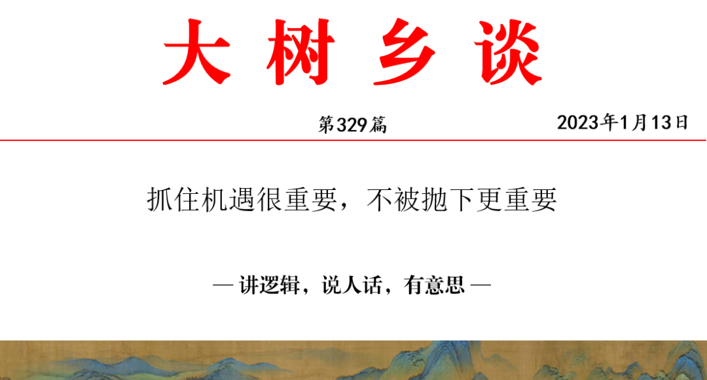
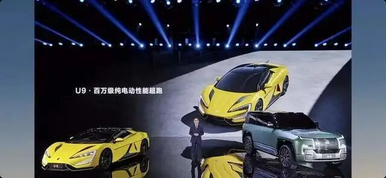
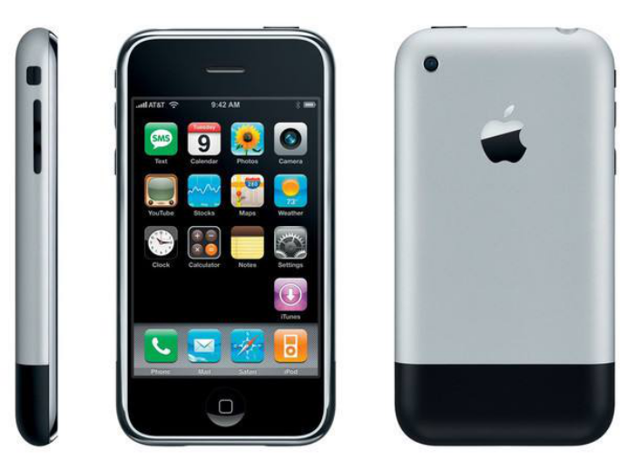

抓住时代变革换道超车，普通人也可以做到

- 1 -
2009年，中国汽车产销量双双突破1350万辆大关，首次位列全球第一，自此连续14年蝉联世界第一。2022年，中国实现了又一项历史性超越，比亚迪以全年销量180余万辆超越一汽大众，荣获国内市场第一，同时在全球市场上也以超过特斯拉29%的成绩拿下全球新能源汽车的第一。汽车产业被誉为制造业“皇冠上的明珠”，是资本、技术、人才密集型产业，全球工业发达的国家绝大多数是汽车强国，并且将汽车产业作为支柱产业。中国自主品牌的突破是历史性的，不仅是中国国力和技术提升的体现，也为更多国人提供了更好的就业岗位。
过去这几年，围绕比亚迪有很多负面的信息，比如每当某品牌出现些问题，比亚迪总会出现着火事件，也时常有人拿着某国外品牌的薪资水平与比亚迪对比。但对比薪资要看与所在城市的相对水平，比亚迪的工厂主要在二三线城市，薪资水平本就低于上海，更重要的是，比亚迪为很多城市提供了大量收入超过平均水平的就业，带动更多间接就业，让更多城市能够发展起来，而不是过度集中于少数大城市。

王传福在2022年股东大会上有这么一句话：“新能源汽车的上半场是电动化，下半场是智能化”，这句话与小镇最近集中谈的数字经济关系密切，这句话不仅是比亚迪未来进一步发展的关键，从这句话中也可以帮助大家理解到底什么是数字经济，并从中找到属于自己的机遇。理解数字经济，首先要搞清楚与数字时代与信息时代的区别。最近一直有读者问，美国早在上世纪就搞信息高速公路，信息化早就有了，现在又造了一个数字化的新词，感觉没有必要，也不理解。举一个例子大家就明白了，就用人类有史以来第一个“外部器官”手机来说。
手机无疑是电子信息技术的集大成者，诺基亚在信息时代是一时王者，2007年在中国销量猛增38.6%达到4.37亿部，2008年达到4.68亿部，2009年开始收缩，中国销量降低到4.3亿部，全球销量同比下降7%，此后迅速没落。
如此迅速的衰退，唯有出现时代差距才可能出现。 2007年苹果iphone手机的问世，可以视为手机领域工业经济与数字经济时代的分水岭。

苹果iphone和诺基亚都是电子信息技术的应用，都属于电子信息技术企业，但诺基亚属于工业经济时代，而苹果属于数字经济时代，区别就在于，过去的手机基本的功能就是通讯和一些简单的其他生活服务，那个时候手机有各种各样的造型。而当苹果iphone诞生后，手机在硬件和外形上越来越趋近于统一，看上去每个人的手机都一样，但实际上每个人的手机都截然不同，关键就在于这个手机载体上搭载的各种功能的软件。诺基亚时代，是以硬件定义产品，满足不同需求；而到了苹果时代，则改为软件。这就是根本区别，意味着数据成为第一位的关键要素。
就如小镇现在换手机，只会考虑继续用华为，就是为了方便数据传输，确保常用的软件、设置仍然保持一致，避免可能遭受的数据损失和时间精力的投入。现在很多互联网公司也是以数据为核心开展经营，比如软件版本的更新，往往采取灰度测试和AB测试，根据用户的反馈进行迭代更新，核心还是数据。
- 2 -
当然只说这些还是太虚了，那就说点实的，算算这种变革带来的巨大收益。还是以手机为例，在工业时代的手机，那就是一个产品，虽然也有一些配套的产业，但主要以手机主机厂为主，2007年诺基亚市值1500亿美元，摩托罗拉400多亿美元，此外还有三星、索尼、爱立信等等品牌，但也就如此了，并没有能够超越手机产业链的衍生产业。到了数字时代，围绕手机诞生了一个极为庞大的衍生产业链。手机领域市值最高的苹果今天市值是2万亿美元，还有三星、华为、小米、oppo、vivo、传音等等品牌，再加上手机产业链企业，规模非常庞大。
但更庞大的是以手机为中心的衍生产业，正因为手机的智能化很多潜在需求才得以挖掘。比如一众互联网头部平台，比如谷歌、微软、亚马逊、脸书，又比如腾讯、阿里、苹果、百度等等，围绕这些衍生的产业，也进一步诞生了更多新的产业和就业，比如直播电商、内容新消费等等。
把这些新兴的衍生产业加在一起，无论是经济总量还是创造的就业都远高于手机产业链，这就是数字经济带来的巨大动力，而这才不过刚刚开始，不过是在消费领域的变革，还没有真正延伸到更多的传统行业、供给端。 新能源汽车正在发生类似于苹果手机的颠覆，汽车也正在从工业经济时代向数字经济时代进化。转折点同样来自美国，2012年特斯拉Model S完成了首次整车OTA，开启并实践“软件定义汽车”，这就好比2007年苹果iphone的诞生，用软件而不是硬件定义手机。
常看小镇的朋友或许还记得，小镇对特斯拉称不上友好，关键在于特斯拉在技术应用上过于激进，汽车不同于手机，手机故障大不了重启，汽车怎能重启？特斯拉过于强调软件，弱化了安全性，比如用电信号取代传统的机械、液压或气动形式的连接，极大减少了车体内线缆长度，大大提高了整车的一体化，降低成本的同时大大缩短了组装时间，但安全呢？这类过于偏重软件的思想，也埋下了安全隐患，比如刹车问题，就不展开了。今天的主题是数字经济的变革，还是要感谢特斯拉开拓了新路，将汽车带入了新时代，之所以引进特斯拉作为刺激中国汽车产业的鲇鱼，就是因为决策层看到了特斯拉的方向才是未来，能够带动更大规模的经济发展。
上海引进特斯拉，其背景正是上海押注数字经济，希望以数字经济奠定未来的发展。效果很明显，短短几年，特斯拉带来的新理念和对中国汽车产业链的改造升级，极大促进了中国自主品牌汽车的大发展，从2018年“狼来了”，到2022年中国自主品牌打了翻身仗，还实现了新能源汽车对传统燃油汽车的历史性超越。
- 3 -
为什么王传福说“新能源汽车的上半场是电动化，下半场是智能化”，指的就是汽车从硬件到软件的转变， 汽车不仅是一个交通的工具，更是一个载体，把汽车从工业时代带到数字时代。 第一层带来更丰富的衍生产业。汽车的电动化是提供稳定、充沛电力的关键，这是电子元器件规模应用的基础。新能源汽车上面的芯片数量数倍于燃油汽车，更是手机的20余倍，按照工信部《新能源汽车产业发展规划（2021-2035年）》，到2035年新能源汽车（纯电、混动、燃料电池）将成为主流。
按照这个规划，参考目前进程，预计到2030年仅中国汽车芯片用量就将超过1000亿颗，可能还是保守估计，如此规模的应用不仅带动芯片产业，也将在汽车领域再现手机领域的变革。第二层品牌竞争优势和用户体验提升。上周比亚迪进行了仰望系列产品展示，U8的坦克掉头、120公里时速爆胎仍然安全、超强的通过性留下了很深的印象，彻底变革了汽车的定义，如此大的技术优势逼迫特斯拉等品牌进行了大幅度的降价，这当然有利于消费者，但对企业而言，降价确实有效，但这是不得已的情况下才使用的，一旦价格掉下去再想提上去就难了。
比亚迪的仰望U8能够实现坦克掉头、120公里时速爆胎仍然安全，在于四个轮边电机迅速实现扭矩调整和方向调控，还能根据地面附着力的不同调整最佳驱动力，甚至去掉两个对角的轮子仍然可以平稳行驶。还有另一项技术，比亚迪的混动，在节能和驾驶体验方面做得非常好。这些表现，在工业时代的汽车上有的也能打折实现，比如通过锁死对应转弯一侧的后轮，另外三个轮胎正常驱动，完成小半径的掉头；又比如日本曾经推出的早期油电混动。但这些效果都非常一般，体验并不好，这背后的关键就在于软件，核心还是数字技术的广泛应用，就需要提到第三层。
第三层：数据要素优势。 数字时代与信息时代最核心的差别是数据成为关键生产要素，能够创造实实在在的价值。比如比亚迪的U8以及出色的混动。能够实现高度依赖长期收集的大量数据，在对不同条件下汽车形式的数据进行分析的基础上，能够更加智能的调控电机、调控不同动力的启用，从而实现传统燃油汽车无法实现的功能等等，这些东西从硬件上没什么不同，能造出来的企业并不少，但硬件背后的软件以及对数据的分析和应用才是关键的差距。数字经济时代，谁掌握更多的数据，谁就掌握更大价值。以苹果的例子结束这一节。
苹果已经成为全球市值第一的公司，市值超过2万亿美元，卖手机仅仅是一个载体，撑起如此高市值的是海量的数据，数据才是苹果最核心的资产。最容易理解的就是基于精准推送的广告。如微软、脸书、YouTube、字节、腾讯等等营收都高度依赖广告，精准推送的基础就是获得数据、描绘用户画像，而这绕不开一个关键节点：手机。2021年6月，苹果上线隐私新规，新增“App跟踪透明度”功能，只有用户授权，App才能跟踪用户在手机上的行为。仅这一项，苹果就拿到了数据发挥价值的管理权，超过一半用户在苹果提醒下终止对App的授权，导致靠精准推送广告获利的公司损失严重，比如脸书在每年损失超过100亿美元。
由此延伸，为什么很多App愿意免费提供服务？为什么免费还能获得巨额融资，还能上市获得海量回报？ 关键还是数据，人与人、人与物、物与物之间的互动产生了大量的数据，在数字时代之前，数据很难大量获取并应用，而到了今天，一切都不同了。
- 4 -
再来谈谈个人，尤其普通人。很多人关心如何抓住时代机遇，但相比获益，更重要的是别成为时代变革“牺牲品”。从纺纱机到流水线再到数字技术广泛应用，每一次大的变革都会创造新的就业、也会取代旧的就业、更会重构职业，这是个人无法抗拒的大势。现在中国就业已经出现了结构性的错配，核心是教育与实践的脱节、人才供需之间的矛盾，造成这一问题的原因有很多，比如中国产业升级速度仍然太慢，尚不能满足劳动者从体力到脑力地迅速升级，也开始出现工厂招不到人、求职者找不到工作的矛盾等等。
这个矛盾已经非常明显了，几乎所有劳动者都能看到，尤其是正在寻求就业和在校生。最近小镇收到很多读者的建议，希望增加音频、视频，小镇显然没有时间精力去做，也不想从零开始学习，就想着找一位在校实习生去做，收到了不少简历，其经历的丰富度令小镇乍舌，明明还是在校生，但仅从简历看，说有1-3年工作经历并不为过。而在未来，对就业的更大的威胁，则是时代的变革，已经发生了，可能比预想的还要更快发生，那就是从工业时代向数字时代跨越中，新的技术对社会、就业、职业的全方位变革，甚至是颠覆。技术进步通过创造新产品、新机器、新产业必将创造更多就业，历史已经证明了这一点，如马克思指出“虽然机器在应用它的劳动部门必然排挤工人，但是它能引起其他劳动部门就业的增加”。
比如第一次工业革命，蒸汽机的广泛应用造成英国大批手工业工人失业，但推动了矿山、冶金、化工、石油、运输等新兴产业的发展。数据时代的变革将更加猛烈。根据美国研究表明，城市中每增加1个高技能岗位，就会带来5个消费型服务岗位，比如技术性的律师、教师、医护，又比如非技术性的服务员、理发师、家政等。比如苹果在库比蒂诺地区拥有12000名员工，在当地也创造了6万多个额外服务岗位。但正如小镇曾经在《未来失业潮：人会被机器取代吗？》提到的，这种技术的变革，必将对传统就业造成冲击，这里的“机器”泛指非人，也包括数据等智能技术的应用。
从总量上，数字经济的变革必将增大就业，如教育部原副部长、中国职业技术教育学会会长鲁昕认为，未来5年，中国对数字经济带来的新职业需求将达到9000万名，成为吸纳就业的新的“蓄水池”，但被取代的又有多少呢？麦肯锡给出了一个数据：到2030年，中国将至少有1.18亿人被人工智能或机器人替代，另外有700万到1200万人转换职业。相比如何借势发展，更多的人需要思考的是如何不成为被替代的“牺牲品”，这是整个行业、整个职业的颠覆，个人在旧有的道路上无论多么努力都无法逆转，必须考虑如何从根本上改变：调整职业发展思路，做好换道准备。中国灵活就业从业人员已经超过2亿人，这基本是数字经济发展带来的，根据目前测算，在未来几年内，灵活就业将成为就业的主流。
灵活就业不仅仅是快递员、外卖员、网约车司机，也包括其他相关产业，比如网约车，产生的附带就业机会达到司机就业岗位的六成左右，现在脑力劳动正在成为灵活就业的主流。新的机遇已经出现了，小镇在公众号上创作，何尝不是为了适应数字时代的变革？最近腾讯联合中国人事科学研究院做了一个报告，有些数据很有启发，甚至超过小镇的认知。这个报告统计，依托公众号、小程序、视频号、支付等构建的腾讯生态，带动了147个新职业发展，创造3180万新就业岗位。
当然需要调整一个认知，数字时代的就业更加灵活，不像过去一个人在一段时间固定在一个劳动关系里，数字时代的就业更加灵活，就拿一个创作者来说，可以同时在腾讯、字节、百度、知乎、得到乃至更多的平台投入劳动获得收益，因此不同平台的创造就业数据累加一定大大超过实际。但要看的关键是趋势。去年小镇同灵活就业领域的一些企业有过沟通，包括雇佣大量灵活就业人员的平台，也包括为平台和劳动者提供中介服务和劳动保障的企业，彼此都很有启发。国家正在为未来就业的变革提前布局，比如对劳动立法进行后才能更新，突破独立性劳动、从属性劳动的“劳动二分法”限制，改为“劳动三分法”。2021年人社部等八部门联合印发《关于维护新就业形态劳动者劳动保障权益的指导意见》就是关键标志，其中引入了“不完全符合确立劳动关系情形”的表述，意味着中国增加了第三种劳动形态，可以简单理解为“灵活就业”。
到这里已经说了很多了，有读者建议小镇，数字经济太大了，想把这事儿说清楚根本不可能，但把一些已经发生的和确定性的趋势分享出来还是能够做到的，后续还会以更多的例子说透。希望能给大家以启发，最后做一个调研。
其他文章推荐
■ 全球经济危机不可避免，国家、个人又该如何破局？
如果喜欢，还请点赞、“在看”和关注吧 欢迎分享，让更多人发现“大树乡谈” 防失联，请关注“大树乡谈2022”